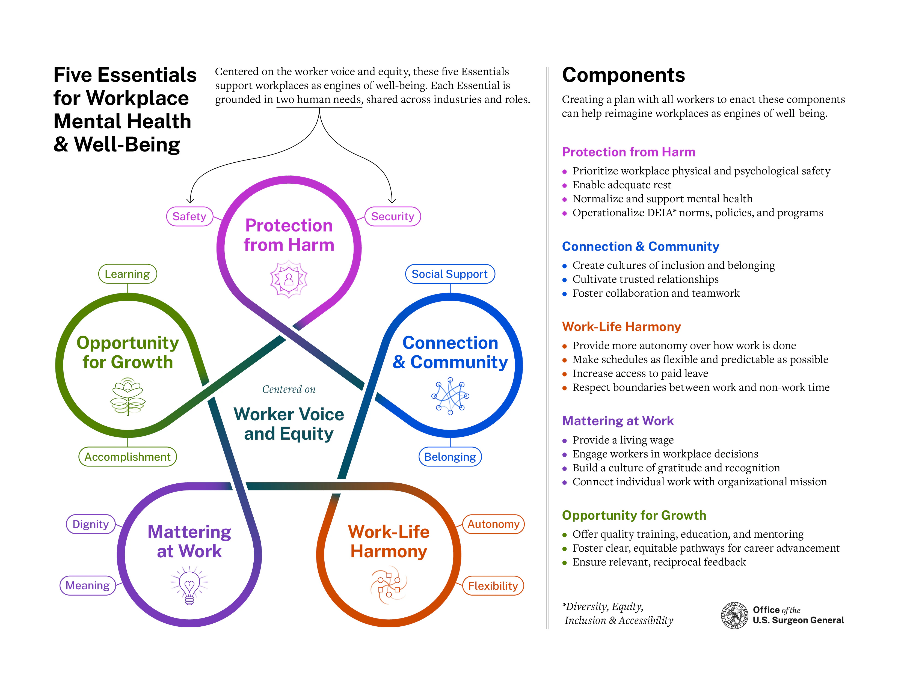

A short, psychometrically-tested instrument for measuring workplace well-being across occupational groups — grounded in the US Surgeon General’s Framework and designed to produce both a total score and a per-domain profile in about five minutes.
Workplace well-being looks different for a nurse on a night shift than it does for a researcher at a desk. The Augusta+ Scale was built to capture those differences.
The scale was developed in collaboration with Dr. Neil MacKinnon, President of Central Michigan University (CMU profile ↗).
Items are organized by the five domains of the US Surgeon General’s Framework for Workplace Mental Health & Well-Being. Every respondent gets a total score and a domain-specific profile — so a single number never obscures where the strain actually lives.
The scale was tested for psychometric properties (reliability, factor structure, and construct validity) in a series of studies. It’s brief, framework-grounded, and profession-aware — designed to be usable by individuals, teams, or in population-level surveillance.
Interested in using it in your research or organization? Get in touch →
In October 2022, the US Surgeon General released the Framework for Workplace Mental Health & Well-Being — a five-essentials model organized around Worker Voice and Equity. The Augusta+ Scale operationalizes these five domains into a brief, measurable instrument.

Framework image not yet added.assets/surgeon-general-framework.png.Short enough to include in busy workflows or larger surveys without dropping response quality.
Five domains from the Surgeon General’s framework — each scored separately — so a single number reflects the whole picture, not just burnout.
Interpretation bands are calibrated to occupational groups — a physician’s “moderate” isn’t the same as a general worker’s.
Backed by reliability, factor structure, and validity analyses from our foundational study.
If you use the Augusta+ Scale — or want to read the psychometric evidence behind it — please cite the foundational paper first, and any of the follow-up work as appropriate.
MacKinnon, N. J., Ambade, P. N., Hoffman, Z. T., Mehra, K., Ange, B., Ruffa, A., Kornegay, D., & Odo, N. (2024). Development of a New Instrument to Measure Workplace Mental Health and Well-Being. Mayo Clinic Proceedings: Innovations, Quality & Outcomes, 8(6), 507–516. doi:10.1016/j.mayocpiqo.2024.09.002
Ambade, P. N., Hoffman, Z., Yi, M., & MacKinnon, N. J. (2025). A national survey of health professional student preceptors’ workplace mental health and well-being. Electronic Journal of General Medicine, 22(5), em682. view article ↗
MacKinnon, N. J., & Ambade, P. N. (2025). National Academies of Practice’s member survey on workplace mental health and well-being. Journal of Interprofessional Education & Practice. view article ↗
No. The assessment runs entirely in your browser. Nothing is uploaded, saved, or shared.
No. The Augusta+ Scale is a research instrument for workplace well-being, not a diagnostic tool. It’s not a substitute for professional help.
Please get in touch. I’m happy to share the validated items, scoring rules, and profession thresholds for academic use.
Yes — the assessment is fully responsive and works on any modern browser.